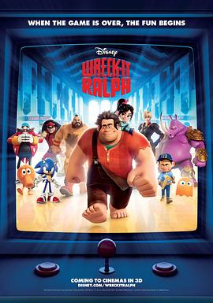

无敌破坏王 / Wreck-It Ralph
又名：破坏王拉尔夫 / 破坏王大冒险
“善待每一行代码” 分辨率不同怎么可以谈恋爱？？
作品信息
| 导演 | 瑞奇·摩尔 |
| 编剧 | 菲尔·约翰斯顿 / 珍妮弗·李 / 瑞奇·摩尔 / 吉姆·里尔顿 / 约翰·C·赖利 / 山姆·J·莱文 / 贾里德·斯特恩 |
| 主演 | 约翰·C·赖利 / 萨拉·西尔弗曼 / 杰克·麦克布瑞尔 / 简·林奇 / 艾伦·图代克 / 敏迪·卡灵 / 乔·洛·特鲁格里奥 / 艾德·奥尼尔 / 丹尼斯·海斯伯特 / 伊迪·麦克勒格 / 雷蒙德·S·佩尔西 / 杰斯·哈梅尔 / 瑞秋·哈里斯 / 斯盖拉·阿斯丁 / 亚当·卡罗拉 / 霍拉提奥·桑斯 / 莫里斯·拉马奇 / 斯戴芬妮·斯考特 / 约翰·迪·马吉欧 / 瑞奇·摩尔 / 凯蒂·洛斯 / 贾米·埃曼 / 乔西·特立尼达 / 辛贝·沃克 / 塔克·吉莫尔 / 布兰登·斯考特 / 蒂姆·梅尔滕斯 / 凯文·迪特斯 / 杰洛·里佛斯 / 马丁·贾维斯 / 布莱恩·克辛格 / 罗杰·克莱格·史密斯 / 菲尔·约翰斯顿 / 鲁本·兰登 / 凯尔·赫伯特 / 洁米·斯贝勒·罗伯茨 / 尼克·格里姆肖 |
| 类型 | 喜剧 / 动画 / 奇幻 / 冒险 |
| 制片国家/地区 | 美国 |
| 语言 | 英语 |
| 上映日期 | 2012-11-06(中国大陆) / 2012-11-02(美国) |
| 片长 | 101分钟 |
| IMDb | tt1772341 |
最后一次看到是 2026-08-12T21:12:08+08:00 · 豆瓣原页